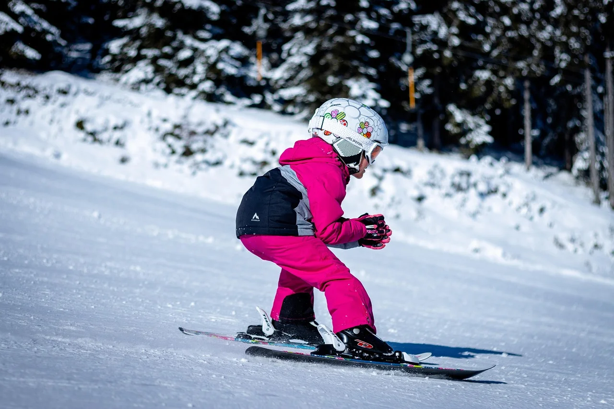
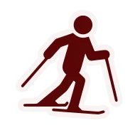
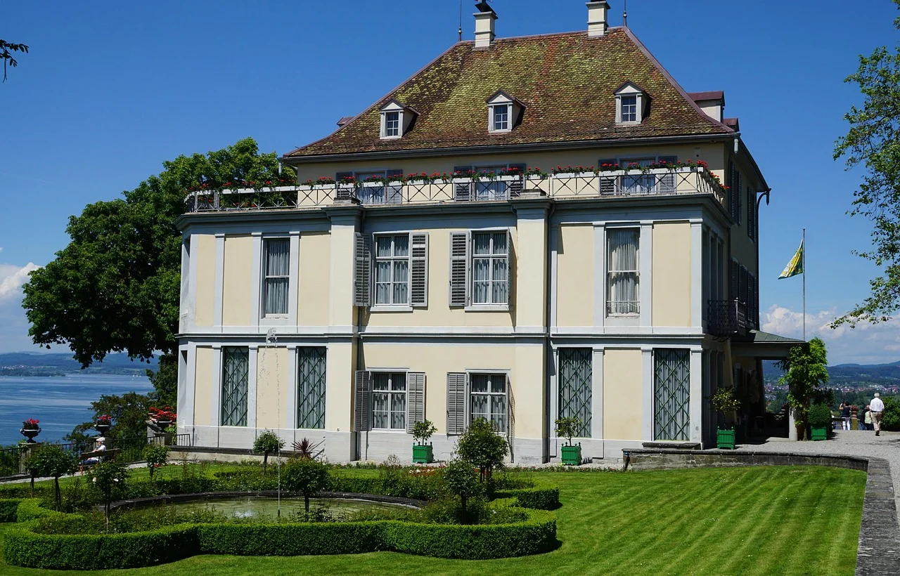
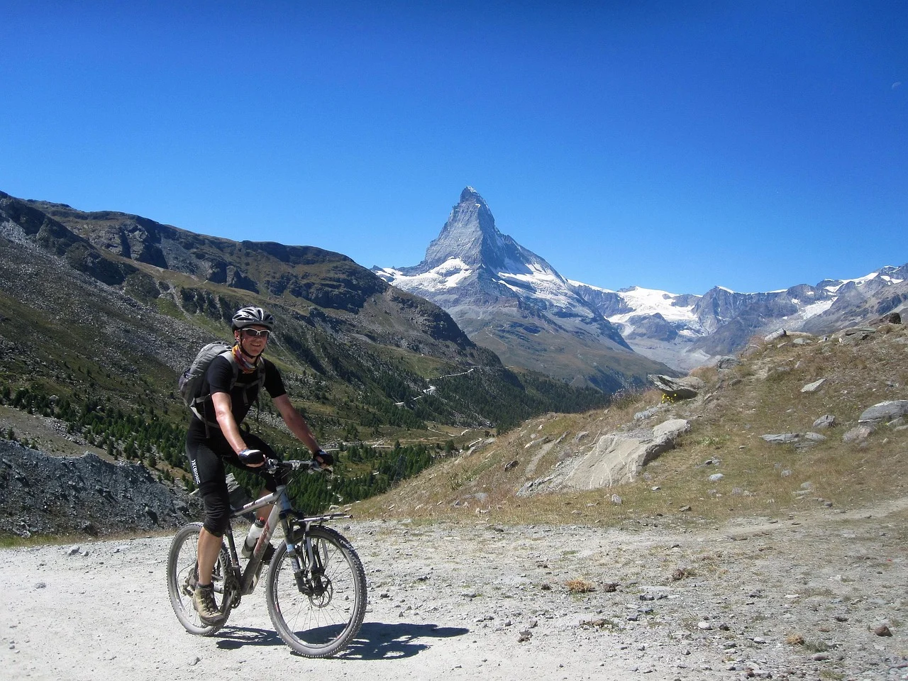
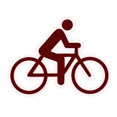
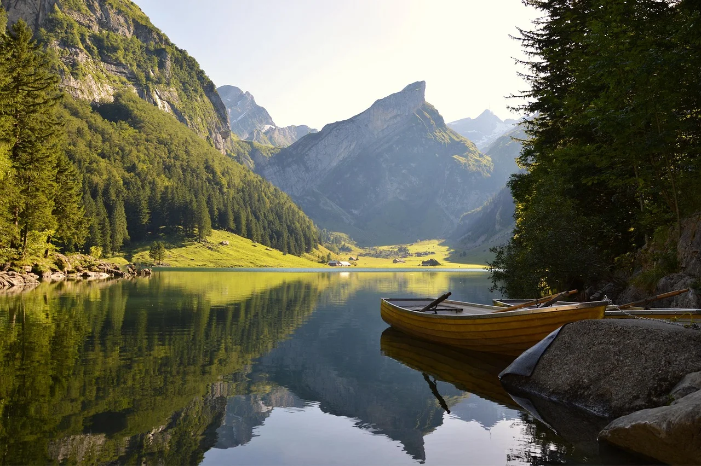
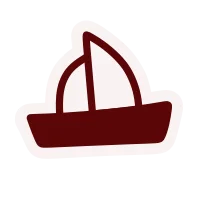
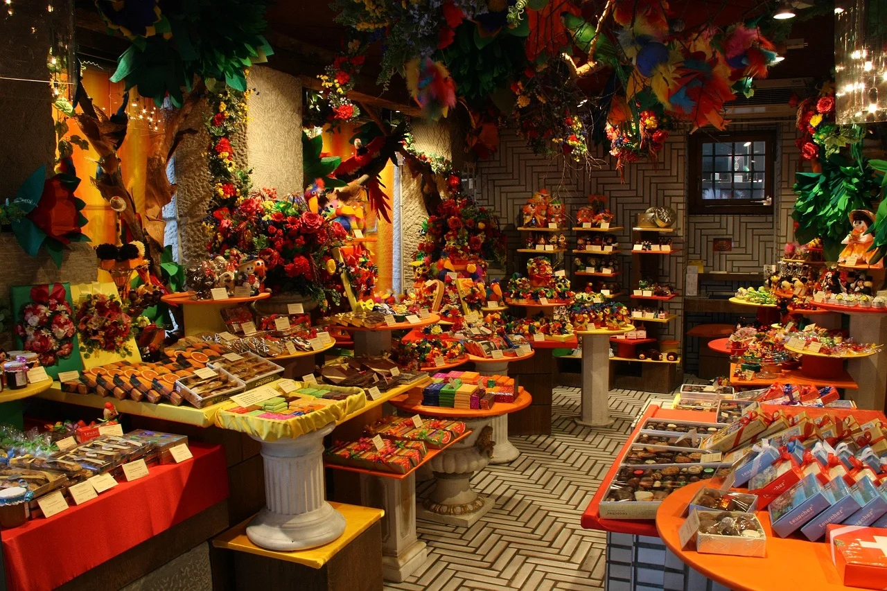
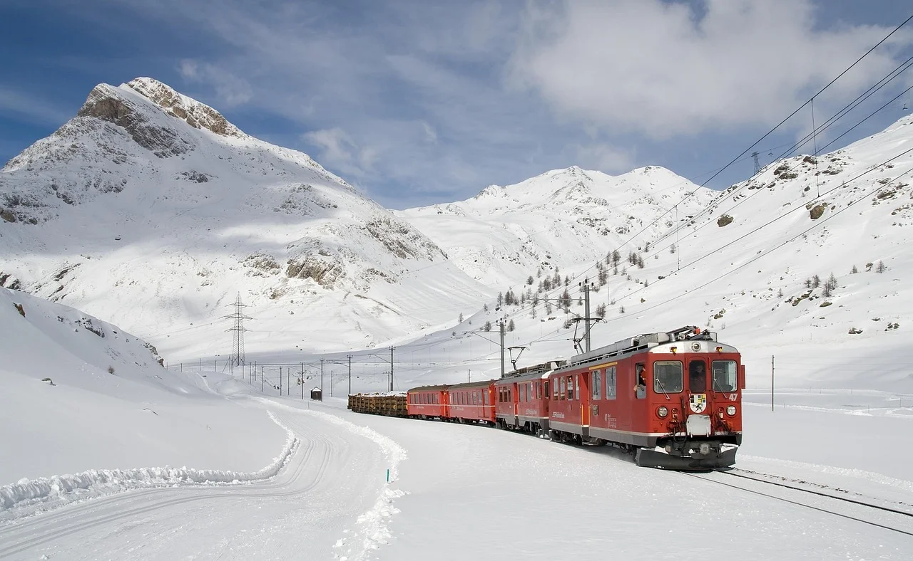
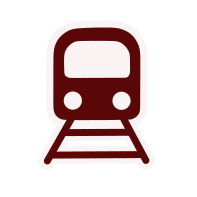

Aventuras para Todos los Gustos
Desde emocionantes deportes de invierno hasta relajantes recorridos por lagos cristalinos, Suiza ofrece experiencias únicas para cada viajero. Descubre actividades que combinan adrenalina, cultura y paisajes de postal.

Invierno
Esquí y Snowboard
Domina los Alpes suizos
Suiza cuenta con algunos de los mejores dominios esquiables del mundo. Desde Zermatt, con el icónico Matterhorn como telón de fondo, hasta St. Moritz, donde nació el turismo invernal, encontrarás más de 7,000 km de pistas preparadas para todos los niveles. Los modernos sistemas de transporte te llevan a glaciares eternos y altitudes que superan los 3,000 metros.

CulturaMuseos
El arte y la historia te esperan
Suiza alberga más de 1,000 museos que cubren desde arte antiguo hasta contemporáneo. El Museo de Arte de Basilea, el más antiguo de Europa, y la Fundación Beyeler son imprescindibles para los amantes del arte. En Zúrich, el Landesmuseum te lleva a través de la historia suiza, mientras que el Museo Olímpico en Lausana celebra el espíritu deportivo mundial.

Verano
Ciclismo
Pedalea por paisajes de ensueño
La red de rutas ciclistas de Suiza supera los 12,000 km, desde suaves paseos por valles verdes hasta desafiantes ascensos a puertos de montaña. La ruta del lago Constanza, el Valle de Joux y los circuitos alrededor del Lema n son particularmente populares. El sistema Swiss Cycling Routes está perfectamente señalizado y conecta pueblos encantadores, viñedos y lagos cristalinos.

Naturaleza
Lagos
Aguas cristalinas de ensueño
Más de 1,500 lagos adornan el paisaje suizo, cada uno con su carácter único. El Lema n es el más grande y famoso, perfecto para cruceros panorámicos. El Lago de Lucerna, rodeado de montañas imponentes, ofrece some de las vistas más espectaculares del país. Los lagos de Ticino, con aguas más cálidas, son ideales para nadar durante el verano, mientras que los lagos alpinos de Engadina reflejan picos nevados eternos.

Gastronomía
Chocolate
El dulce tesoro suizo
Descubre el arte del chocolate suizo visitando fábricas históricas como Lindt en Zúrich, Cailler en Broc o Toblerone en Berna. Los tours te llevan a través del proceso de fabricación, desde el grano de cacao hasta la tableta final, con degustaciones ilimitadas. Muchas experiencias ofrecen talleres donde puedes crear tus propias pralinas y trufas con maestros chocolateros suizos.

Paisajes
Trenes Panorámicos
Viajes que son el destino
El Glacier Express, el Bernina Express y el GoldenPass Line son legendarios. Trenes con vagones de cristal que atraviesan puentes vertiginosos, túneles helicoidales y valles profundos, ofreciendo vistas que dejan sin aliento. El tren más lento del mundo te lleva de Zermatt a St. Moritz en 8 horas de paisajes alpinos espectaculares, sin perder detalle gracias a sus techos y paredes transparentes.